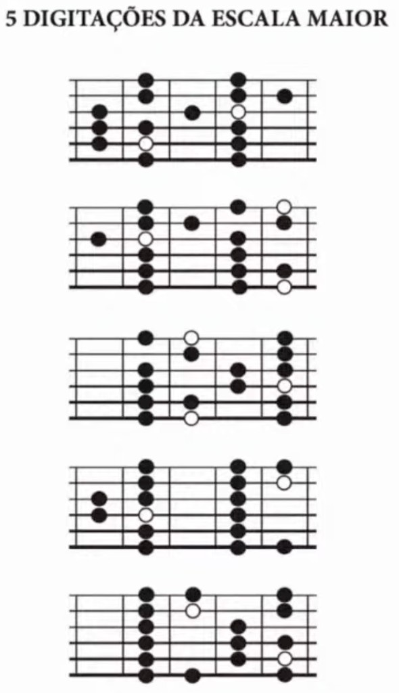

Shapes CAGED · graus funcionais · tablatura · método Nelson Faria / MOD-BRAÇO-01
Cada diagrama cobre uma janela de 5 casas (span da mão — padrão CAGED / folha do Nelson). Bolinha preta = nota da escala. Bolinha branca = tônica (1). Deslize o bloco inteiro pelo braço para mudar de tom. Tab ASCII: escalas-5-digitacoes-tab.txt · SVG poster: escalas-5-digitacoes-poster.svg.

Ordem no poster (de cima para baixo, Sistema 5 / Cifra Club): A → G → E → D → C shape. No braço, elas se encaixam como peças de quebra-cabeça — a última casa de um shape liga à primeira do seguinte.
GPS da tônica — maior 2 / 4 / 2 / 4 / 2 (localizar a raiz nas cordas grossas antes de tocar):
| Dig. | Shape | Âncora maior | Menor (contraste) |
|---|---|---|---|
| 1 | A | 2 na 5ª (A) | 1 na 5ª |
| 2 | G | 2 na 6ª (E) | 1 na 6ª |
| 3 | E | 4 na 6ª (E) | 4 na 6ª |
| 4 | D | 2 na 4ª (D) | 1 na 4ª |
| 5 | C | 4 na 5ª (A) | 4 na 5ª |
Cordas no diagrama: linha de cima = e (1ª · Mi agudo) · linha de baixo = E (6ª · Mi grave). Casas não são numeradas — o bloco é relativo e vale para qualquer tom maior.
Cada nota da escala recebe um grau: sua função harmônica medida a partir da tônica (1). Nos artefatos há duas numerações distintas — não confundir:
| Camada | Onde aparece | Exemplo | Significado |
|---|---|---|---|
| Casa relativa | Linha da tab (--2-4--) | 2, 4 | Posição física dentro do shape (1ª–5ª casa do bloco) |
| Grau funcional | Linha “graus” abaixo da tab | 5, 6, 1 | Função da nota na tonalidade (intervalo desde a tônica) |
2 = nota Dó = grau 1. Na mesma corda, casa rel 4 = Ré = grau 2. Parênteses na tab = casa onde cai a tônica (1).
| Grau | Função | Em Dó | Papel melódico |
|---|---|---|---|
| 1 | Tônica | Dó | Repouso — “casa” |
| 2 | Supertônica | Ré | Passagem, início de frase |
| 3 | Mediante | Mi | Define o caráter maior |
| 4 | Subdominante | Fá | Afasta da tônica |
| 5 | Dominante | Sol | Estabilidade |
| 6 | Superdominante | Lá | Cor dórica / relativo menor |
| 7 | Sensível | Si | Tensão → puxa pro 1 |
Nelson canta os graus ao subir: 1-2-3-4-5-6-7-1. Na menor, o 3º, 6º e 7º podem ser bemolizados ou alterados — ver graus na escala menor.
Nas tabs: casa (1–5) = posição no shape · graus = função na tonalidade. Parênteses = tônica. Amarelo = grau · Vermelho = tônica (1).
{kind=link}